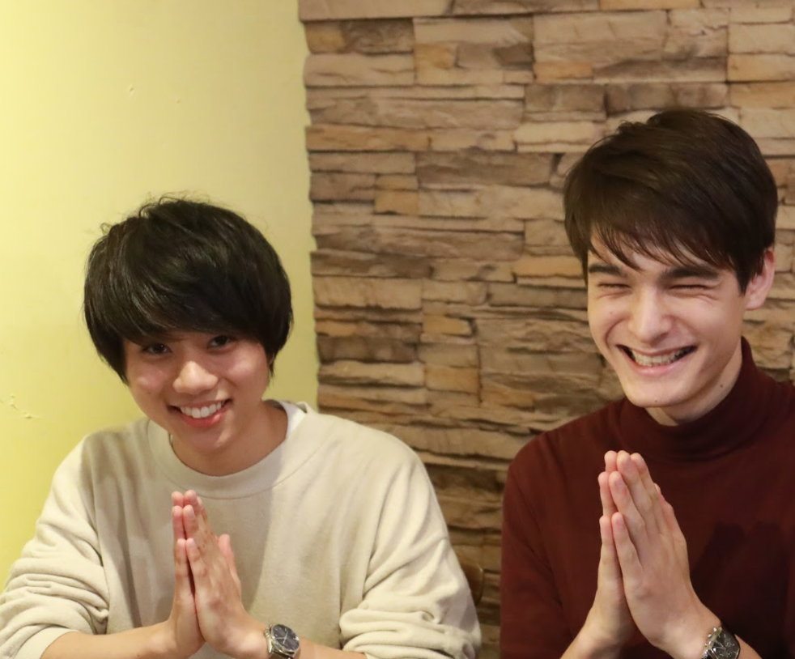

可愛い系・安座間とミステリアス・椎名
じゃんじゃん聞いていきましょう！
 はーい!
お二人は同じ学科でミスターコンに出場しているけど、エントリーが決まる前から元々仲は良かったんですか？
え？やるまでにはないです。
出会ったこともない。ちらっと見たことはあるかもしれないけど…ちゃんと喋ったのが夏終わってからかな？江ノ島の、PV撮影があって、仲良くはなったけど、あんまり二人では喋ってはなくて。
やられた〜〜！！でも金町・葛飾キャンパス勢として仲はいいのかな？
いいです。しかも唯一の１年生同士なので。
そうか、他はみんな上級生っていうのは大変ですね。下級生らしい役回りというのはできていますか？
まずこいつ（椎名）がヤバいんです！最初の集まりの時にすでに全員にタメ口だったんですよ！！
それはまた…攻めてるね。
もともと新（あらた：椎名）は下級生感無くて、先輩かなぁと思っていたんです。そしたら、え、お前１年生かよ！しかもまさかの浪人じゃなくて現役の…って何をお前オラついてんだ！って。上級生は気にしてなかったのかな、って最近話したら「あれはお前ヤバかったよ」って。（笑）
それは何かあったのかな？

実は記憶がないんですよ。
緊張して気を張ってたとか？
夏休み明けにもミスターコンの集まりがあった時に、「急に敬語だけどどうした？」って言われて「あれ？俺、敬語使ってなかったっけ？」みたいな。記憶がないんですよ。
感じると思うんですけど、新は異世界にいる人なんですよ。ちょっとなんか人と違う。
そういうつもりはないんですけど…
インタビューしていても感じませんか？
感じる。怖いもん（笑）
そういうところ出さないように…逆に出した方がいいですかね？
最初は「どうこいつ扱えばいいの？」ってなって。すかしてるし、なんかヤバい奴だなと、最初からタメ口ぶっこむし。
逆に安座間ちゃんはどんな感じだったの？
もう“可愛い系”！すごい皆さんと仲良くしてましたね
もっと悪く言っていいのに…。でもそれは感じるかな。

椎名くんはスポーツマン
椎名くんはスポーツをずっとやってらしたようで。
これまで野球一本ですね。
でも今テニスやってるよね。
なんで今テニスサークルに入っているの？ソフトボールサークルでも良かったんじゃない？
テニスをやりたくて。全くの初心者だったんですが。ラケットも今年に入ってから買ったくらい。
そうなんだね、ラケットも今年に入って買ったの？
そうなんです。先輩に選んでもらって。
ラケットって高くない？
安いの買った、２万円弱とか。
えっそれって安いの？
安い安い！
野球のグローブはいくら位するの？
野球のグローブは４、５万とかですから、それと比べると安いですよね。
昔使っていた野球のグローブ、今も手入れしてますか？
それが持ってないんですよ。使い切りました。
使い切ったって…どう使い切るの？「ここまでが使い切った」とかってどう決まるの？
引退試合で役目を終えると、かな。

沖縄＆イランの出身トーク
沖縄出身か、珍しい苗字だよね、「安座間」って。
そうですね、ここでは珍しいですよね。沖縄でもあまり聞かないかなぁ。
東京に来たのは…
東京に出てきたのは今年、大学受かってからですね。よく珍しい苗字だねって言われます。沖縄出身なの？とはあまり聞かれませんけど。
東京ではあんまり沖縄弁出さないの？
出ないですね。むしろ方言喋って、と言われると困るかも。（笑）

「ないちゃー」についてどう思う？
なんで「ないちゃー」知ってるんですか！？
沖縄の友達がいるんだよね。
「ないちゃー」ってなんなんですか？
沖縄と北海道の人は本島のことを内地って言って、それが沖縄なまりだと「ないちゃー」っていうの。
へえ〜〜。
「ないちゃー」の印象はどう？
新宿や渋谷とかの人は冷たいな〜って感じます。でも、大学の近くの人は優しいですね。温かみがあります。

気になっていたのだけど、椎名くんはハーフ？
ハーフです。母方がみな日本人で、お父さんがイラン出身。
へー、ペルシャ語が得意と書いてあったのは…
そういうことです。だから一応少しならペルシャ語を話せます。身内だけだと通じるような。
え？！そうなの？聞いたことなかったよ！
いや、めっちゃ言ってるって！
聞いてないよ！
サラームとか、挨拶なら普通にできます。
サラームってペルシャ語なのか。ちょっと話してみてくれる？
「dfghウェbfgshgfjげう（ペルシャ語）」
急にここ（店を見回して）が違う国に見えて来た…
安座間！対抗しろ対抗！
っ……くっそ全然出てこない。

違う場所にルーツがあるっていいね。イランには遊びに行ったりするの？
最近は全然行かないですね。幼い頃には行ってたんですけど。
お父さんは帰ったりしないの？
めっちゃ帰ってるよ。１、２年に１回くらい。
やっぱりお父さんもかっこいいのかな？
お父さん、おデブです。
一同 （笑）
0.13トンあるって言ってます。身長は俺と一緒くらいで。
え？130kg？
怖いな…お父さんスポーツやってるの？
やってないですね。バイクが趣味でブンブン乗り回してます。
1.3トンがバイクに…
まてまて、1.3トンはやばい。0.13トンでしょ。
あっそれだと1300kgか、どこの重機だよっていう。
一同 （爆笑)
工業製品の目安が1トン100万円らしいよ
…
どうでもいいね
次行きましょう

お父さんはミスターに出ること応援してくれてる？
そこまでしてくれてないかな、ミスターに出ることは言ってはいるけど、話のネタにしてるくらいです。
いいじゃん。投票はしてくれてる？うちの家族は投票してくれてて。
してないと思う。お母さんはしてくれてるかな。
お父さんに似たんだね。
そういうことかな。
忙しいミスターコン、羽を伸ばしたい！

ミスターはやっぱり忙しい？
正直めちゃくちゃ忙しいです。まずバイトに入れない、レポートもきついです。日曜が朝から晩までリハあるので。
忙しいですね。イベントやリハにパソコン持ち込んだり。あとテレビを見なくなりました。電源を抜いてしまいました。
え、抜いちゃったの？
そういうことです。
よくわからない、どういうこと？
見なすぎて使わないので、
電気代無駄だから？
地球に優しく、ですかね。

忙しいミスターだけど、終わったらやりたいことはある？
むっちゃ遊びたいですね。バイトもしたいし、羽を伸ばしたい。
土日に旅行に行きたいよね、長期休みよりも。
土日がうまっちゃうからね〜。
一泊したいですね。日帰りでもいいんですけど。

どこか行ってみたいとかある？
北海道はこの前行きたくなりました！友達の「飯がうまい」という話を聞いて！あと、九州ですね、２月頃に友達と行きたい。
海鮮やばいね。俺もカニ食べたいな。長期休みは旅行は行きたいな〜初めての春休みだし。
不思議系と可愛い系、こだわりが強いのはどちらも一緒？
自分を一言で表すと
「我」ですね。
一同 いいね〜。
なんか自分の決めたことを守りたいんです。レポートでもクセが強いって言われる。
それ、いいのか？（笑）
自分だけの守りごとがあったり。リビングのいろんなものを置くとききっちり置く。家族が適当に置いたら、ヒョイっと直す。自分のペースがあるので。

安座間くんは？「我」超えてって欲しいな。
その癖の強いのを超えるのは無理だよぉ〜〜〜。
頑張るんだ、安座間！
うーん…。正直いうと、自分は「真面目」です。
いいじゃない。
細かいんですよね、俺も。こだわりが強い。自分がこうしたいと思ったら、自分の部屋もきっちりさせたい。潔癖症じゃないんですけど、綺麗好きなんですよ。少しでも乱れてたらもうダメ。汚すのとか、汚されるのはいいんですけど、そのままにして置くのが嫌で、すぐに片付けたくなります。掃除とかも細かいところまでやらないと気が済まない。
じゃあ椎名くんも部屋は綺麗なのかな？
僕も綺麗だと思います。自分でコロコロやってるかな。

逆に自分のダメなところ、何かある？
面倒くさがり屋です。Twitterで下書き作って、確認し忘れて、そのまま不採用にしたり。料理屋に行って料理の写真撮って、あげ忘れたり。
椎名くんのTwitterは自撮りが多くない？そんなイメージ
画質の悪いやつね。低画質の「新（アラタ）スタイル」いいと思う。
今日は激寒。。。
— ミスター理科大No6 椎名新 (@mrtus2017_06) 2017年10月6日
登校も講義も食事の時もジャージ👕
季節の変わり目風邪に気をつけましょう^^
温泉行きたいな♨️☺️♨️
今日も投票お願いします( ˊᵕˋ )https://t.co/YO4Q7skcuG pic.twitter.com/HrubGKO6fG
ミスは「フォトジェニックなところ行って来ましたー」みたいな写真あげるじゃない。葛飾ミスターもやらんかい！！
すみません！！！

食文化ぽいの聞いとこうかな。好きなおにぎりの具は？
曲げられないのが二つ！
俺もある。
せーので言おうか。せーのっ！
明太子！
いくら！
あ、タカハシは明太子かツナマヨ
ツナマヨね、昔ツナマヨだったけど今はいくら派。セブンイレブンの１００円セールの時にいくらおにぎりを買って、ゆっくり味わって食べる。いくら買ったら、写真撮るもん。
お前は…金がないのか？
いくらおにぎりだいすき、セールの時しか買わないけど。

気になる意気込みは…
もう本番まで１ヶ月切りましたけど、どうですか。
緊張しますね、選ばれるかどうか気にしないとしても。
ちゃんと成功させたいです。イベント自体として。だから、当日のことを常に考えてます。
そうだよね。ちゃんと考えて、あの人数の前でやるのかと、緊張する。
実際にやるホールでリハーサルしたんです。リハして、実感が湧いてきたからこそ、緊張しますね。
その前まではミスターの活動自体、取材とかがメインで、どんな雰囲気とかイマイチつかめなかったけど、やっとミスターとしての自覚が出てきました。

では、最後に意気込みを
本番来てくれる人に向けての、絶対楽しませるので、ぜひ来てください！
体育館が埋まるくらいの人に来ていただいて、すべての人に楽しんでいただきたい！